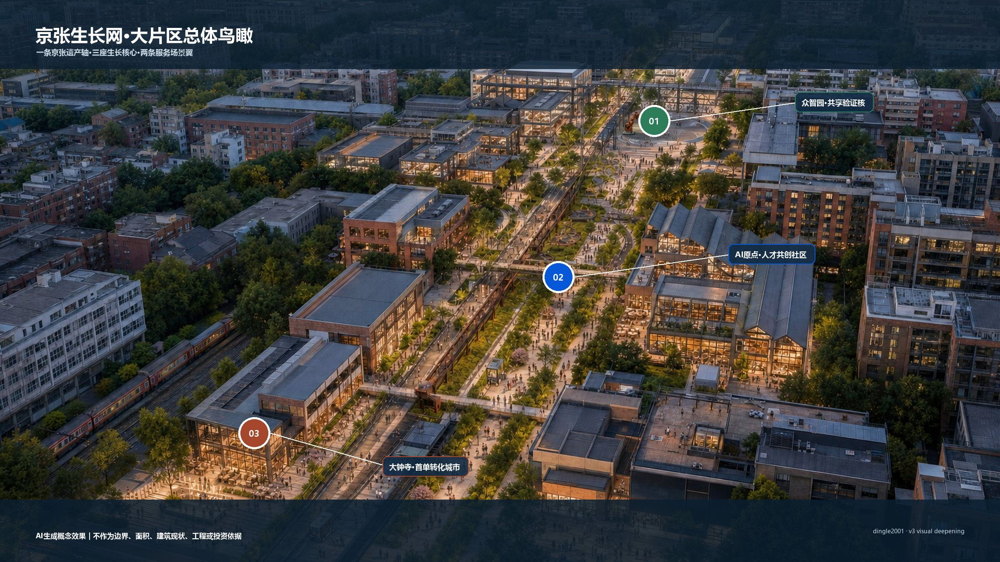
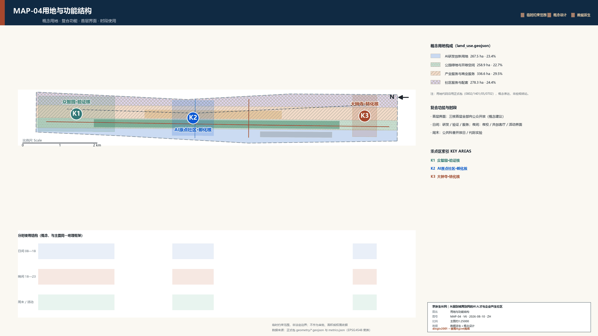
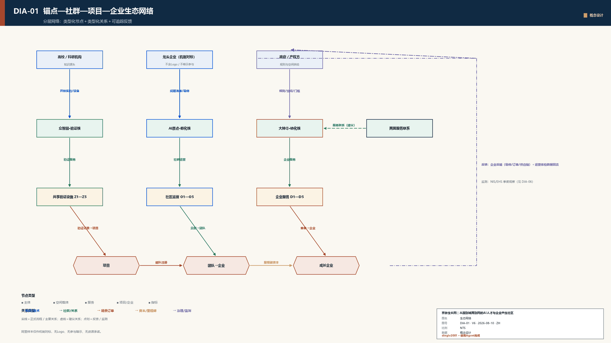
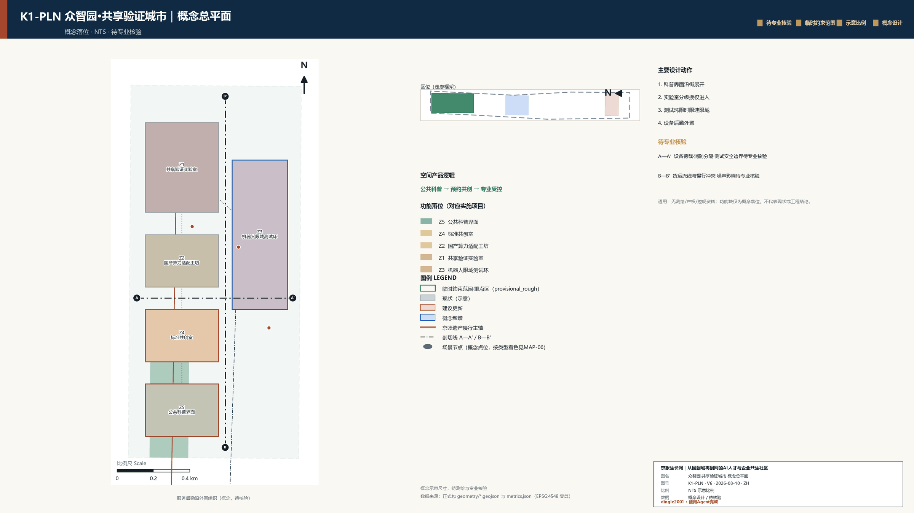
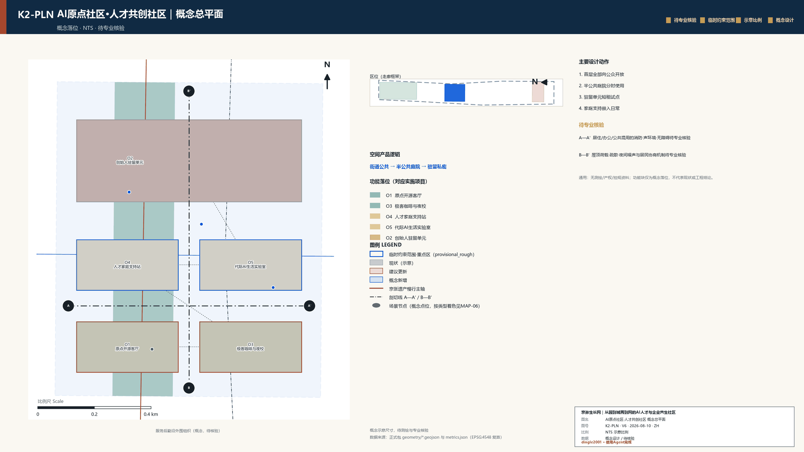
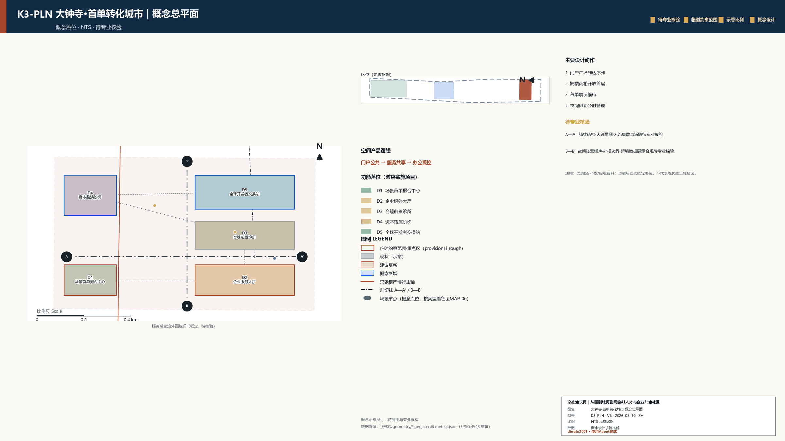
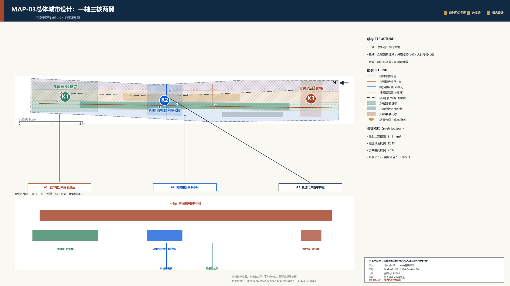
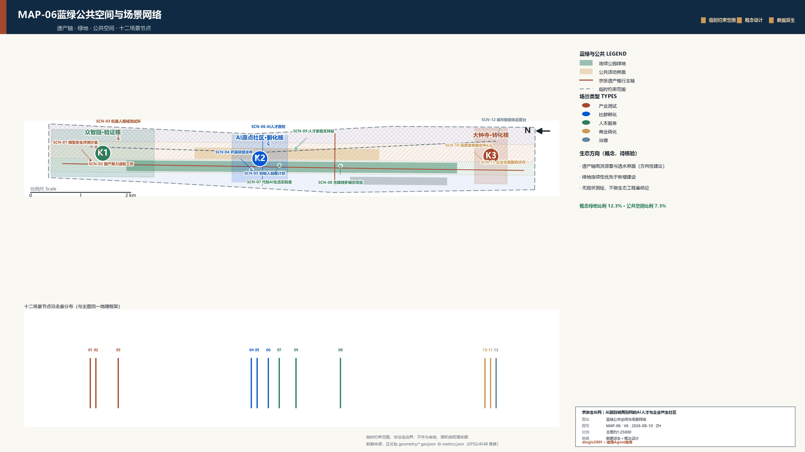
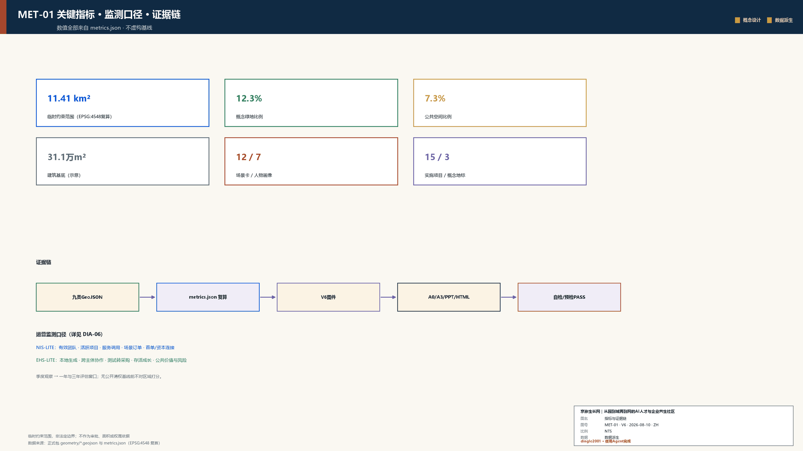

京张生长网｜从园到城再到网的AI人才与企业共生社区
高校与龙头企业是锚点，街区是孵化器，社群是基础设施：以一轴三核两翼把人才关系转化为项目，把项目转化为企业。
京张生长网｜从园到城再到网的AI人才与企业共生社区
核心主张：高校与龙头企业是锚点，街区是孵化器，社群是基础设施。 海淀不缺创新源头，真正需要补足的是把人才关系转成项目、把项目转成企业、再让成长企业反哺下一轮创新的城市接口。
设计依据与资料清单
本方案以公开任务书、仓库资料包、专业标准和可复算临时空间数据为约束，以作者第一轮“火星计划”研究中的“园—城—网”“五级生长回路”和企业生命周期观察为理论母体。第一轮材料只提供原创方法，不复制朝阳区内部市场监管数据；关于阿里巴巴北京总部、孵化器和创作者社区的事实全部改用朝阳区公开一手资料重新核验。来源 来源
阿里样本不是照搬总部园区，更不是假定企业向外开放算力，而是提炼三点机制：第一，头部机构产生高密度人才与需求；第二，轨道、人才生活和公共界面决定人才是否从“通勤人口”变成街区使用者；第三，孵化、专业服务和创作者社区决定人才关系能否转成项目。京张的转译对象不是某一家企业，而是沿线高校、科研机构、头部企业和专业服务共同形成的多锚点网络。来源 来源 来源
当前 SITE_BOUNDARY 与三处 KEY_AREA 仍为仓库 provisional constraint（临时约束范围）。它们只支撑本次概念生成、拓扑检查和内部面积复算，不是官方红线、产权边界或精确地块。新增场景节点、建筑原型和联系线均是设计建议，不得据此作拆迁、控规、工程或投资判断。空间数据 深度

三层范围工作框架
统筹研究范围回答“海淀AI创新资源如何形成协作网络”；总体设计范围回答“京张遗址公园周边如何成为连续的创新生活街区”；三处重点区回答“验证、孵化、转化三种机制如何进入可感知空间”。三层并非三套方案，而是一条从战略到空间产品再到运营项目的证据链。标准 深度
在统筹层，方案识别高校、科研、企业、服务和公共场景五类节点，强调跨机构合作与人才自由流动。在总体层，以京张遗址公园作为文化—慢行—创新展示轴，以两条横向服务翼补足东西向联系。在重点区层，每个核心都形成“空间结构＋建筑更新＋公共界面＋场景卡＋运营项目＋风险”的完整小方案。官方边界到位后，应先替换边界，再重做用地拓扑和全部派生指标，不得只换底图保留旧数值。空间数据 深度
统筹研究范围产业与未来城市研究
从园到城再到网
“园”解决集中供地和标准化生产，“城”解决工作、生活和公共服务混合，“网”解决知识、订单、人才和资本跨节点流动。AI产业的轻资产、高流动和弱组织化特征，使单纯提供办公面积难以完成孵化。京张生长网因此不以“再建一个园区”为目标，而是建设一套城市级创新操作系统：算力和实验设施是底座，开放场景是界面，人才社群是连接器，专业服务和首单机制是转化器。来源
七个国际案例的可转译机制
| 案例 | 核心机制 | 对京张的转译 |
|---|---|---|
| Kendall Square | 大学科研与企业、公共空间共同构成高密度创新街区 | 转译为临近科研资源的步行网络与共享设施 |
| King's Cross Knowledge Quarter | 以文化、科研和公共机构构成跨组织知识网络 | 转译为京张遗产与AI社区共同策展 |
| one-north | 研发、孵化、居住和公共空间在同一城市片区混合 | 转译为三核差异化而非单一办公园区 |
| Paris-Saclay | 大学、实验室、企业与交通基础设施协同 | 转译为科研—验证—企业服务链 |
| MaRS | 以创业服务、资本和社区连接科研成果 | 转译为大钟寺首单和企业服务大厅 |
| High Tech Campus Eindhoven | 共享实验设施与开放创新社区降低企业协作成本 | 转译为众智园共享验证与标准共创 |
| 22@Barcelona | 工业片区通过混合功能、公共空间和创新网络渐进转型 | 转译为可逆改造和长期运营 |
案例只用于比较机制，不复制媒体图像，不把国外空间规模、投资或制度直接套用到海淀。来源 来源 来源
总体设计范围城市更新与控规深度城市设计
总体空间结构为“一轴三核两翼”。一轴是京张遗址公园文化、慢行和创新展示轴；众智园是全栈验证核，AI原点社区是开源孵化核，大钟寺是商业转化核；中关村科技服务翼把政策、数据、算力、知识产权、合规和投融资做成可调用服务；小月河场景赋能翼把交通、环境、社区和公共空间问题做成可测试订单。空间数据 深度

该鸟瞰以总体地图、慢行蓝绿网络和三处模块视景为视觉参照，将北部验证、中部人才共创、南部首单转化组织成一条连续的铁路遗产创新走廊。图像为AI生成概念效果，只表达空间气质与系统关系，不证明真实建筑、边界、尺度、工程条件或实施承诺。[assumption:A-AI-VISUAL-006]

五级生长回路依次为：释放可负担、可短租、可逆改造的空间；植入带真实问题和数据边界的场景；以开源活动、夜校、项目诊所和导师网络形成高频弱关系；将连接转化为可验收项目；再通过首单、合规、资本和人才服务形成企业或长期组织。空间、制度、产业和金融必须同步推进，否则共享空间会变成普通办公，活动会变成一次性热闹，招商会重新压倒主体自生。来源 深度

用地方案继续采用完整拓扑分区，确保无重叠、无缺口。功能比例只描述本方案的临时概念图层，不构成法定用地调整。开发强度、建筑高度、道路红线、总建筑规模和市政容量因缺少正式控规与现状调查保持待确认。空间数据 标准 深度
重点区域详细设计
三处重点区图件采用“概念总平＋A—A'剖面＋运营门槛”同页证据结构。剖面参照房屋建筑与建筑制图的表达逻辑设置轴网、标高、开间／总尺寸链、剖切与投影线权、改造材料图例、疏散和无障碍提示；所有尺寸均为原型控制尺寸，统一标注“概念阶段／NTS／待专业核验”，不构成测绘、报审或施工图。标准 标准 来源
众智园：把“实验室能力”变成可共享的验证城市
众智园采用“共享实验脊＋限域测试环＋标准共创庭院＋公共科普边界”结构。内部高安全级测试与公众开放界面物理分区，团队通过预约进入共享实验室，测试结果形成可复现实验单，再进入标准工作坊和企业服务目录。建筑优先保留可适配的大跨空间，以透明、轻型、可拆卸构件增加观察廊和共享设备间；设备荷载、消防、防爆与电力条件须专项核验。空间数据 深度

AI原点社区：让人才从“同处一地”走向“共同做事”
原点社区采用“开源客厅＋项目诊所＋创始人驻留＋极客咖啡夜校＋人才家庭支持站”结构。白天服务科研转化、项目门诊和家庭支持，晚上转为开源协作、闪电演讲和社区夜校，周末承载公众体验和代际共创。空间采取小单元、短租约、共享客厅和开放首层，避免高租金、长期合同和封闭门禁把早期团队挡在外面。空间数据 来源
代际AI生活实验室延续第一轮作业中的“技术反哺生活、生活场景帮助技术迭代”思路，但把基本权益放在创新之前：老人、儿童和普通居民不是免费测试对象；任何采集都需知情、最小化、可退出，并保留线下服务和人工兜底。

大钟寺：把项目成果转化为第一位客户和可持续企业
大钟寺采用“轨道门户＋企业服务街＋首单大厅＋合规诊所＋资本路演阶梯”结构。公共通道连接街道、轨道和内部庭院，首层设置可切换的展示、服务和会议单元，上层承载专业服务与成长企业。这里不以封闭总部大堂为原型，而以公开、可进入、可比较的城市商业界面降低早期企业寻找客户、法律、登记、知识产权和融资资源的成本。空间数据 深度


AI 创新生态、人才画像与 AI+ 场景
| # | 人物画像 | 关键需求 |
|---|---|---|
| 1 | 科研人员 | 成果转化、兼职协作边界、可信测试 |
| 2 | 独立开发者 | 低成本工位、算力、开源同伴与第一位客户 |
| 3 | 创业团队 | 项目诊断、场景订单、人才与组织化支持 |
| 4 | 成长企业 | 验证设施、专业服务、扩张空间与资本连接 |
| 5 | 专业服务与投资机构 | 标准化入口、可信项目和里程碑证据 |
| 6 | 居民家庭 | 可理解、可选择、可退出的生活服务 |
| 7 | 运营治理人员 | 风险分级、日志审计、人工接管与动态体检 |
人物画像不用于精准营销，而用于确定空间门槛、服务入口、数据边界和人工兜底。团队的成长旅程为“科研/兴趣—开源协作—稳定团队—Demo—真实验证—首单—注册与成长—反哺社区”，每一阶段都对应一个空间、一类服务和一项可观察证据。
| ID | 场景卡 | 类型 | 空间 | 用户 | 治理边界 | 阶段成果 |
|---|---|---|---|---|---|---|
| SCN-01 | 模型安全评测沙盒 | 产业测试 | 众智园 | 科研人员、创业团队 | 隔离环境、分级授权、人工放行 | 完成可复现实验单与风险复盘 |
| SCN-02 | 国产算力适配工坊 | 产业测试 | 众智园 | 开发者、成长企业 | 不公开敏感参数，设备预约留痕 | 形成兼容性报告与迁移清单 |
| SCN-03 | 机器人限域测试环 | 产业测试 | 众智园 | 企业、运营人员 | 限时限速限域、远程接管、事故复盘 | 形成场景验证记录 |
| SCN-04 | 开源项目诊所 | 社群孵化 | AI原点社区 | 科研人员、独立开发者 | 许可、代码、产品、组织联合门诊 | 从贡献记录转为项目路线图 |
| SCN-05 | 创始人驻留计划 | 社群孵化 | AI原点社区 | 独立开发者、创业团队 | 短租空间、导师回避、成果自愿披露 | 形成稳定团队与阶段评审 |
| SCN-06 | AI人才夜校 | 社群孵化 | AI原点社区 | 科研人员、居民家庭 | 夜间开放、课程共创、无强制采集 | 形成跨机构弱关系网络 |
| SCN-07 | 代际AI生活实验室 | 人本服务 | AI原点社区 | 居民家庭、开发者 | 知情同意、儿童和老人特别保护 | 技术反哺生活、需求反馈产品 |
| SCN-08 | 无障碍多模态导览 | 人本服务 | 京张公共空间 | 居民、访客 | 本地优先、最小采集、随时关闭 | 提升公共空间可达性 |
| SCN-09 | 人才家庭支持站 | 人本服务 | AI原点社区 | 科研人员、居民家庭 | 托育转介、应急人工窗口、隐私隔离 | 降低人才日常生活摩擦 |
| SCN-10 | 场景首单撮合中心 | 商业转化 | 大钟寺 | 创业团队、成长企业 | 问题发布—验证—采购边界全过程留痕 | 完成首个客户或公共场景订单 |
| SCN-11 | 企业合规服务诊所 | 商业转化 | 大钟寺 | 企业、专业服务机构 | AI仅辅助，专业人员签发 | 降低登记、知识产权与经营试错 |
| SCN-12 | 城市智能体运营台 | 治理 | 大钟寺/两翼 | 运营治理人员、公众 | 权限分层、日志审计、申诉与人工接管 | 形成透明的运营体检闭环 |
三项产业测试均设置限域、责任主体、人工放行和复盘；所有公共服务场景遵循最小必要数据、明确告知、可关闭、可申诉和线下兜底。指标 指标 标准
用地、建筑规模与拆改留方案
建筑策略不是在缺少现状测绘时直接判定“留改拆”，而是建立程序：先做结构、消防、历史价值、权属和适配性体检；可使用建筑优先保留；适合公共开放的首层和通道采用可逆改造；确需拆除或新建的部分必须回到正式控规、产权协商和专业审批。概念建筑原型包括大跨验证厂房、开源客厅、短期驻留单元、开放首层服务街和轻型展示构架。空间数据 深度
财务完整性不等于编造投资额。方案只建立单位运营账户：空间收入＝可运营面积×使用率×单位价格；设备服务收入＝可计费时长×利用率×单价；专业服务收入＝有效服务单量×平均服务费；活动与品牌收入按实际合同核算；股权收益不计入基础偿债现金流。公共空间、基础设施和普惠服务的成本必须单列，不能用高租金转嫁给早期团队。[assumption:A-UNIT-ECONOMICS-007]
交通、轨道、市政与公共服务设施
京张轴承担步行、骑行、文化导览和创新展示；两翼承担横向服务联系；三处轨道门户用连续首层、雨棚、无障碍和短距离接驳连接重点区。机器人测试线与公众慢行线不混用，采用限时、限速、限域、远程接管和事故复盘。道路图层只表达设计联系，不声称红线或交通组织已获批准。空间数据 深度
新型基础设施遵循共享而非重复建设：众智园配置高安全级测试和设备环境，原点社区配置开发工具和低门槛协作网络，大钟寺配置企业服务和运营数据。电力、通信、能源、消防、市政管线和算力供给均待专项核验；不得将任何企业内部资源表述为区域公共资源。

蓝绿空间、公共空间与城市风貌
遗址公园不是景观背景，而是创新生态的公共客厅。工作日午间承担短会和散步，傍晚承担跑步、夜校和闪电演讲，周末承担公众科普和场景体验。公共空间设备不得侵蚀匿名通行和自由停留；面向儿童、老人和残障人士的基础可达性优先于展示性“智慧设施”。空间数据 空间数据
三个地标均为可更新的公共知识装置：京张开源里程碑沿铁路轨迹记录经核验的公共贡献；原点共创厅与全球开发者节点墙展示跨城市协作但不展示未经授权的个人信息；大钟寺企业生长年轮记录项目从验证到首单再到企业反哺的阶段。品牌以京张轨迹分化为节点网络，采用科技蓝、铁路锈红、生长绿和暖灰，不使用未授权企业标识。指标
更新项目清单、实施政策与分期计划
| ID | 项目 | 空间 | 对象 | 建议运营主体 | 依赖条件 | 近期动作 | 主要风险 |
|---|---|---|---|---|---|---|---|
| Z1 | 共享验证实验室 | 众智园 | 科研人员、创业团队 | 专业测试运营方＋高校实验室 | 结构、消防、设备荷载核验 | 开放设备目录与预约规则 | 安全事故与设备闲置 |
| Z2 | 国产算力适配工坊 | 众智园 | 开发者、成长企业 | 算力服务商＋开源社区 | 算力来源与数据安全审查 | 发布首批适配任务 | 资源承诺被误读 |
| Z3 | 机器人限域测试环 | 众智园 | 机器人企业、公众 | 场地运营方＋安全责任主体 | 交通、保险、远程接管方案 | 划定低速测试时窗与物理边界 | 人机混行风险 |
| Z4 | 标准共创室 | 众智园 | 企业、标准机构 | 行业协会＋专业机构 | 议题和知识产权边界 | 形成季度标准工作坊 | 会议化、无成果 |
| Z5 | 公共科普界面 | 众智园 | 居民、访客 | 园区运营方＋科普机构 | 参观与测试区物理分隔 | 试办周末开放实验日 | 商业宣传替代科普 |
| O1 | 原点开源客厅 | AI原点社区 | 科研人员、开发者 | 社区运营方＋开源维护者 | 存量空间和消防核验 | 每周项目诊所试运行 | 活动热闹但项目弱 |
| O2 | 创始人驻留单元 | AI原点社区 | 独立开发者、创业团队 | 专业孵化运营方 | 租赁、居住与办公合规 | 小规模短期驻留 | 租金与筛选排斥 |
| O3 | 极客咖啡与夜校 | AI原点社区 | 人才、居民 | 社区商业＋课程策展团队 | 噪声、营业和消费权益 | 闪电演讲与夜校 | 扰民与过度消费化 |
| O4 | 人才家庭支持站 | AI原点社区 | 青年家庭、老人、儿童 | 社区服务机构 | 托育、养老和隐私合规 | 需求登记与转介 | 责任边界不清 |
| O5 | 代际AI生活实验室 | AI原点社区 | 居民、开发者 | 社区＋技术团队 | 伦理、知情同意和人工兜底 | 小范围共创测试 | 弱势群体被动试验 |
| D1 | 场景首单中心 | 大钟寺 | 创业团队、需求单位 | 产业运营平台 | 采购和场景开放规则 | 发布问题清单 | 承诺订单或利益冲突 |
| D2 | 企业服务大厅 | 大钟寺 | 初创与成长企业 | 专业服务联合体 | 服务资质和收费透明 | 服务目录与预约台 | 重复建设、低使用率 |
| D3 | 合规前置诊所 | 大钟寺 | 企业、运营人员 | 登记、知识产权、法律等专业人员 | AI建议必须人工签发 | 开业前合规清单 | AI替代专业判断 |
| D4 | 资本路演阶梯 | 大钟寺 | 项目团队、投资机构 | 运营方＋投资机构 | 信息披露与适当性管理 | 里程碑路演 | 融资宣传失真 |
| D5 | 全球开发者交换站 | 大钟寺 | 开发者、国际机构 | 社区运营方＋合作伙伴 | 版权、商标和跨境数据边界 | 线上线下节点互联 | 一次性会展化 |
近期0—1年优先做不依赖大建设的规则和试点：空间与设备目录、场景问题清单、项目诊所、合规前置清单、社群运营和三项限域测试。中期1—3年根据试点使用率和安全复盘推进可逆改造、共享设施和企业服务街。远期3—5年再讨论跨节点复制、品牌活动和资产长期运营。每一步设置“继续、调整、退出”门槛，避免先建后找内容。空间数据 深度
运营组织建议由政府或产权方提供公共底座，专业运营机构负责空间、社群和企业服务，高校、企业、专业机构与居民形成协作委员会。市场监管、法律、知识产权、数据和安全等专业人员在企业装修和场景上线前介入，运行后通过投诉、服务调用、企业变更、项目转化和公共反馈开展动态体检。该模式是概念建议，不构成部门职责或政府承诺。
指标体系、面积复算与合规矩阵
几何指标由EPSG:4326图层投影至EPSG:4548复算。临时边界面积、绿地比例、公共空间比例和建筑基底面积只用于包内一致性，不用于官方面积评分。指标 指标 指标
NIS-Lite监测“有效团队、活跃项目、专业服务调用、场景订单、资本/首单连接”五类数量；EHS-Lite监测“本地项目生成率、跨主体协作率、测试到采购转化率、主体存活与成长、公共价值与风险事件”五类质量。仪表盘以季度为观察周期，以一年和三年为评价窗口；在缺少公开、清权基线数据时不生成海淀分数。指标 指标

风险、版权与合规说明
主要风险包括临时边界被误读为官方红线、AI效果图被误读为设计承诺、概念项目被误读为政府安排、公共场景过度采集、AI建议替代专业审批、早期团队被高租金排斥、地标和活动侵犯姓名或商标权。对应措施为显著标注、结构化来源、最小数据、人工复核、可逆测试、阶段退出和清权后展示。[assumption:A-CONTROLS-001] [assumption:A-AI-VISUAL-006]
五张建筑与大片区视景由AI生成，仅表达空间体验，不承担边界、面积、建筑现状、工程可行性或投资依据。本成果使用 Agent 完成，包括资料梳理、结构化数据、图件、HTML、PPTX与PDF生成及一致性检查；最终判断由人类和专业团队负责。公开身份仅使用 dingle2001，不公开真实姓名和工作单位。标准
参考资料
参考资料按四类进入方案：官方公告与任务书确定任务范围、正式赛道和成果深度，是不能被概念设计替代的上位约束；朝阳区公开资料只用于提炼“锚点—轨道与人才生活—孵化服务—创作者社群—企业成长”的机制，不用于证明阿里参与京张项目；第一轮“火星计划”仅提供作者清权的园—城—网、五级生长回路和动态体检方法；七个国际案例用于比较共享设施、混合功能、公共空间和长期运营。来源 来源
几何指标来自临时GeoJSON并按EPSG:4548复算，正式边界替换后必须整体重算；产权、控规、建筑、工程和投资缺口均保留为待核验项。空间数据 指标
1. 百年京张AI创新带官方公告与面向智能体任务书：确定竞赛命题、三层范围与成果边界。来源 2. 北京市朝阳区关于阿里巴巴北京总部周边交通、AI孵化器和AIGC社区的公开资料：仅作外部机制对标。来源 3. 作者第一轮“火星计划”原创研究：园—城—网、五级生长回路、企业生命周期和动态运营体检。来源 4. Kendall Square、Knowledge Quarter、one-north、Paris-Saclay、MaRS、High Tech Campus Eindhoven、22@Barcelona机构公开资料：只转译机制，不复制规模和承诺。来源 5. 城市设计、控制性详细规划、用地分类和建筑设计深度相关专业标准快照：用于专业矩阵和设计深度自检。标准 6. GB/T 50001-2017、GB/T 50104-2010和GB/T 50103-2010：仅用于概念图的轴网、标高、尺寸、线权和总平—剖面证据组织，不构成施工图符合性声明。来源 来源 来源